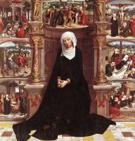
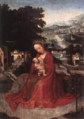

| The Mass of Saint Gregory the Great
1510-50
|
 | Virgin and Child Enthroned
1510
|
 | The Magdalen in a Landscape
1510-25
|
|  | Our Lady of the Seven Sorrows
1518-35
|
 | Virgin and Child
1520
|
 | Virgin and Child
1520
|
 | Adam and Eve
1520
|
 | Christ Crowned with Thorns and the Mourning Virgin
1530
|
 | Mass of St Gregory
|
 | Rest during the Flight to Egypt
|
|  | Rest during the Flight to Egypt
|
 | Archangel St Michael, St Andrew and St Francis of Assisi
|
 | Stigmatisation of St Francis
|
 | Triptych
|